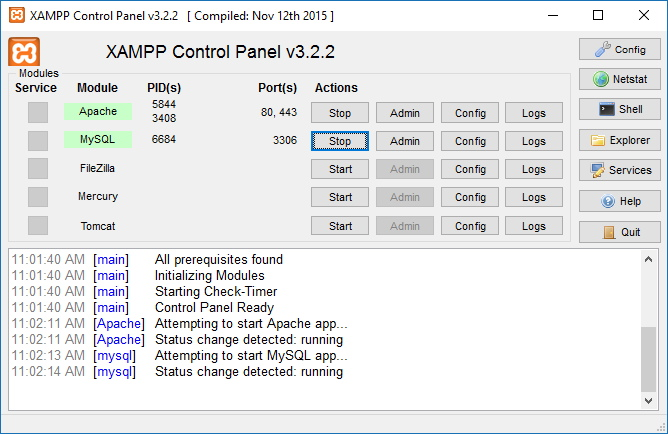
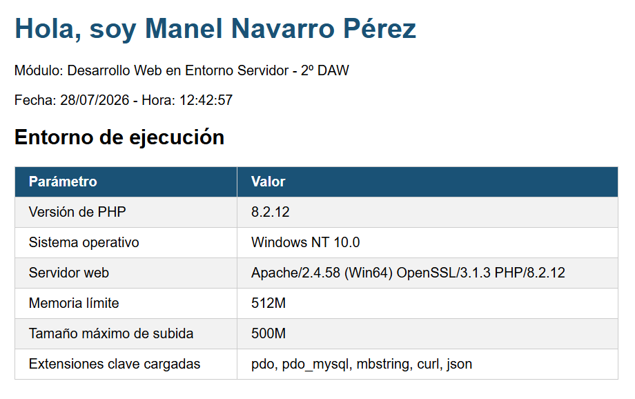

Herramientas de desarrollo
Para ejecutar PHP en local necesitas tres componentes: un servidor web (Apache o Nginx), el intérprete PHP y, habitualmente, un gestor de base de datos (MySQL/MariaDB). Hay dos formas principales de tenerlos juntos.
Opción A — XAMPP (Uso tradicional)
XAMPP agrupa Apache, PHP, MariaDB y phpMyAdmin en un único instalador. Es la opción más rápida para empezar.
Descarga: apachefriends.org

Una vez instalado, copia tus ficheros .php en la carpeta htdocs/ y accede a http://localhost/ en el navegador. El panel de control de XAMPP te permite arrancar y parar Apache y MySQL con un clic.
Variantes equivalentes: WAMP (Windows), MAMP (macOS).
Opción B — Docker (Uso de contenedores)
Docker es un motor de contenedores: permite empaquetar una aplicación junto con todo lo que necesita para ejecutarse (sistema operativo base, dependencias, configuración) en una unidad aislada llamada contenedor. El contenedor se comporta igual en cualquier máquina, independientemente del sistema operativo del anfitrión.
Docker Compose es una herramienta que se construye sobre Docker y permite definir y orquestar varios contenedores a la vez mediante un único fichero de texto (docker-compose.yml). En lugar de lanzar cada contenedor manualmente con docker run (especificando imagen, puertos y volúmenes en la línea de comandos), con Compose defines todo eso en el fichero y levantas el entorno completo con un solo comando.
Para nuestros proyectos PHP, el fichero docker-compose.yml especifica:
- Qué imagen usar (
php:8.2-apache— PHP con Apache ya integrado). - En qué puerto escucha el contenedor y cómo se mapea al puerto de tu máquina.
- Qué carpeta local contiene los ficheros
.phpy dónde se monta dentro del contenedor.
Crea la carpeta Prueba/ con esta estructura:
Se implementa el fichero docker-compose.yml y en src/ se ubicarán los ficheros .php del proyecto.
La ventaja principal del uso de contenedores es la portabilidad de los proyectos, ya que el docker-compose.yml funcionará igual en cualquier máquina, con independencia de qué sistema operativo se esté utilizando.
Ejemplo mínimo de docker-compose.yml para PHP + Apache:
Luego, estando ubicado en Prueba/, con el siguiente comando levantamos el contenedor:
Comprueba que el contenedor esté levantado:
Por último, accede a http://localhost:8080/ para probar.
Si queremos parar el entorno:
Editor de código
| Herramienta | Tipo | Notas |
|---|---|---|
| Visual Studio Code + PHP Intelephense | Editor extensible, gratuito | Recomendado para este módulo |
| PhpStorm | IDE específico PHP, de pago | Más completo; recomendado en proyectos grandes |
| Eclipse PDT (PHP Development Tools) | IDE genérico con plugin PHP, gratuito | Más pesado que VS Code |
Actividades
EJ6 · Puesta en marcha del entorno
Haciendo uso de XAMPP y Docker como servidor, crea el fichero presentacion_TuNombre.php que muestre en el navegador la información siguiente:
- Tu nombre y el ciclo al que perteneces.
- La fecha y hora actuales (generadas por PHP, no escritas a mano).
- Una tabla con estos datos técnicos del entorno: versión de PHP, sistema operativo, servidor web, límite de memoria y tamaño máximo de subida.
La página debe tener un aspecto cuidado (usa CSS básico) y debe funcionar correctamente en los dos entornos: XAMPP y Docker.
Funciones de PHP que necesitarás (Más información en php.net):
Entrega:
- PDF con las capturas de pantalla del resultado en cada uno de los dos entornos (XAMPP y Docker).
- Fichero
presentacion_TuNombre.phpimplementado.
Ejemplo de posible solución:

Si el navegador muestra el código fuente PHP en lugar de la página renderizada, el intérprete no está procesando el fichero. Comprueba que Apache está en marcha (XAMPP) o que el contenedor está levantado (comando docker ps), y que el fichero tiene extensión .php y no .html.